打开练习
点 iPad 主屏幕上的 “单词拼写” 图标。
点你的名字，输入你的 4 位 PIN 密码。同一台 iPad 只要输一次。
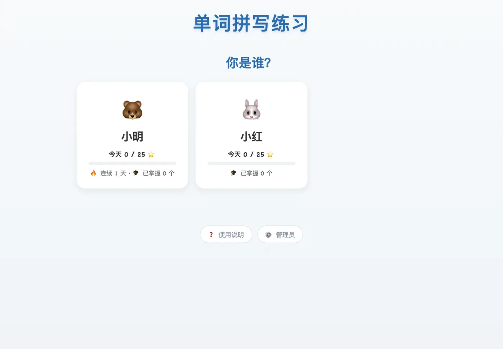
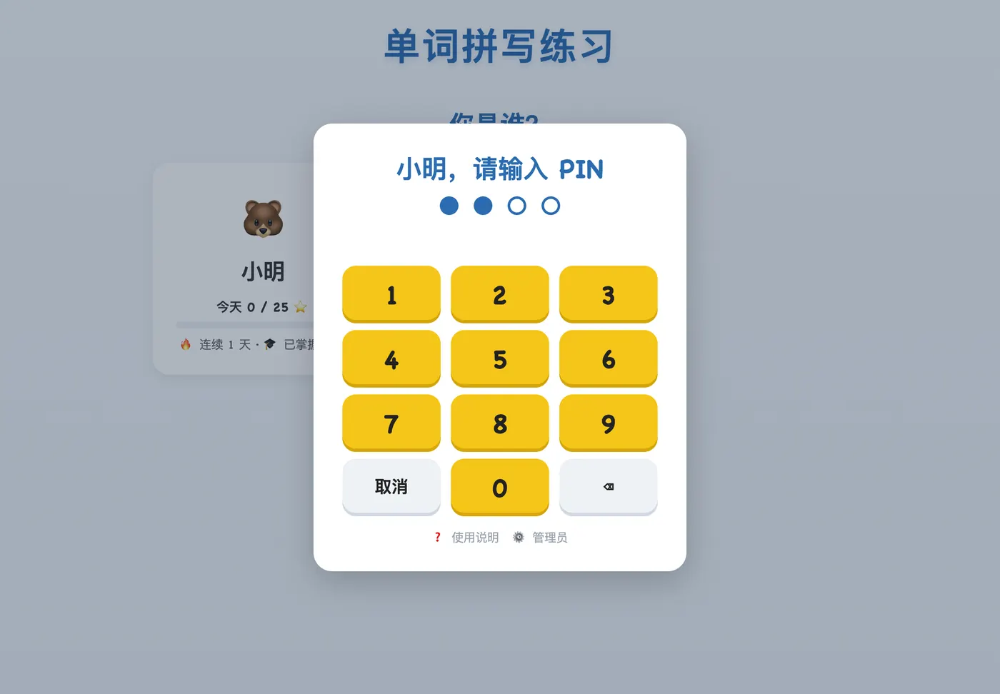
每天按这个顺序练
灰色的卡片现在点不了，看看卡片上的小字就知道为什么。比如“先完成今日复习”。
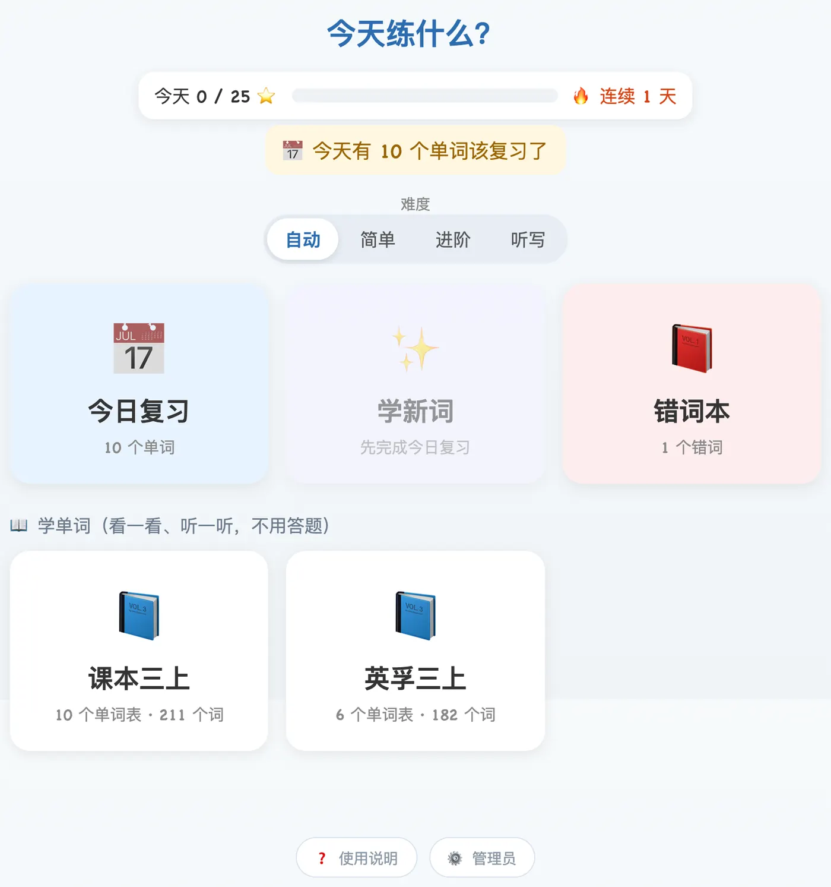
先看一遍单词
点开以后，先看看每个单词的意思，点 🔊 听一听怎么读，再点 “▶ 开始练习”。
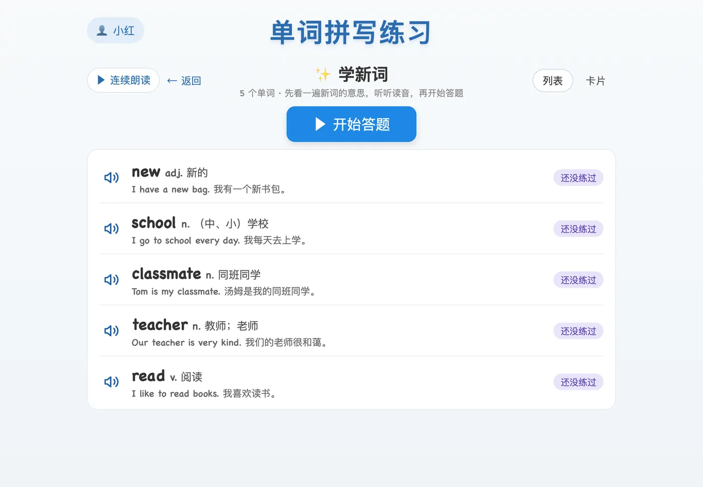
拼单词
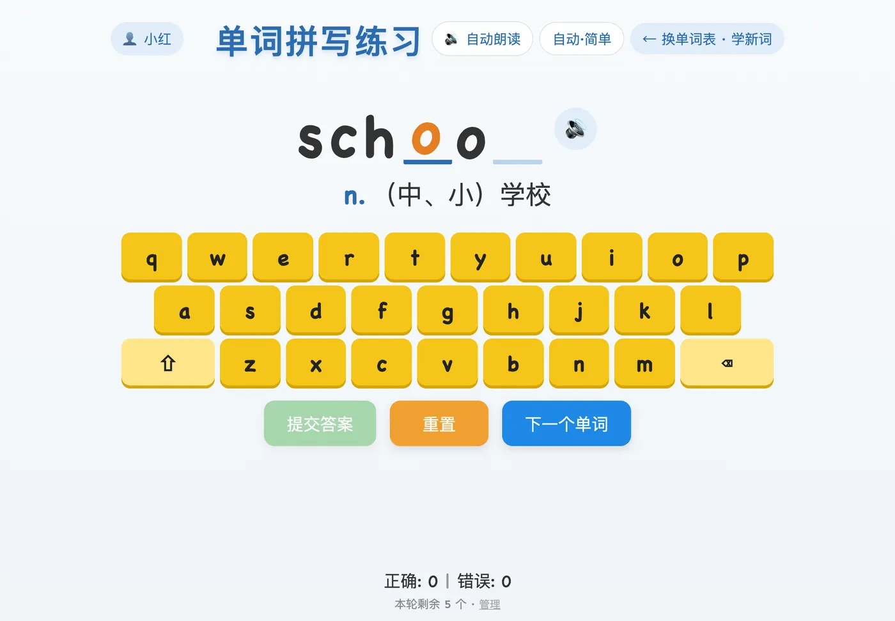
答对了 🎉
会放烟花，然后出现一句例句并读给你听，读完自动换下一题。想快一点，可以直接点 “下一个单词”。
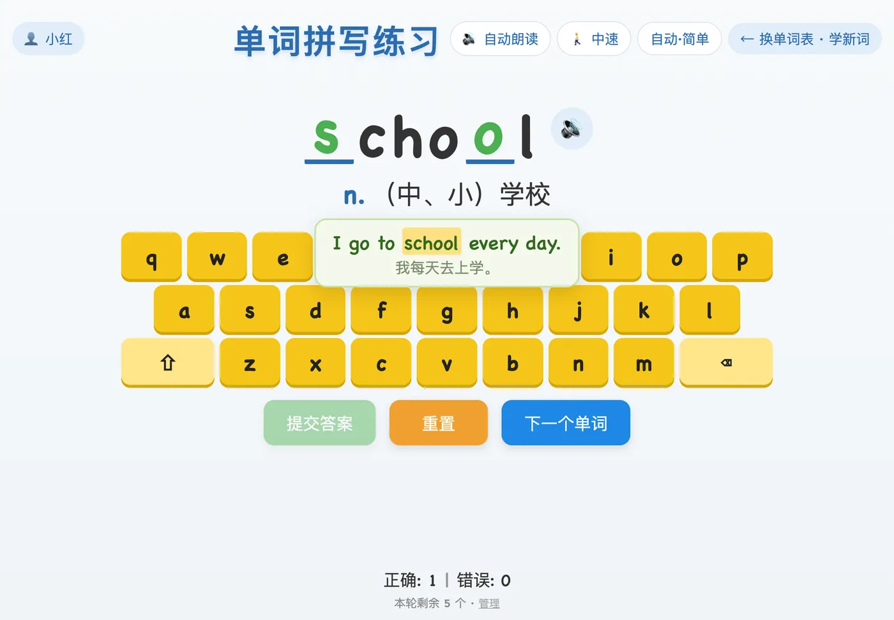
答错了也没关系
会提示“再想想”，还能再试几次。试完次数后，会把正确答案显示出来——记住它，再点 “下一个单词”。答错的词过几天会再来，多练几次就记住了。
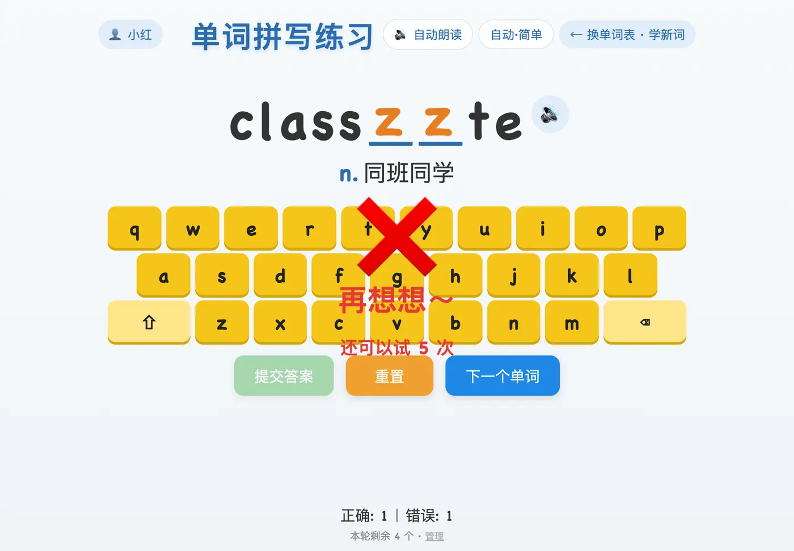
上面的按钮
打卡和徽章 ⭐
每天答对的题数够了，就 打卡成功。连续打卡的天数会显示成 🔥。点进度条可以看你拿到的徽章。
没有网络时也能练，上面会写 “📴 离线练习中”，联网后会自动保存。
/editor.html，输入管理密码。每次进入都要输密码；右上角“🔒 退出”会退出并回到练习页。建议设置：学新词每天大约 30 题、新词最多 5 个，每日目标（打卡）设为 25。孩子每天按这个顺序做：
平时尽量不点单元单词表：在单元单词表里练过的词，就不算“新词”了。
| 情况 | 结果 |
|---|---|
| 第一次答对 | 进入第 1 级，明天复习 |
| 到了复习日答对 | 升一级。间隔依次是 1、2、4、7、15、30 天；第 6 级到期再答对 → 已掌握，不再提醒 |
| 还没到复习日就答对 | 分数 −1，等级不变（不能“刷”到掌握） |
| 答错 | 退 2 级（最低第 1 级），明天复习；同一道题只退一次 |
一个词从学会到掌握，最快大约 59 天。
| 挑哪些词 | 顺序 | |
|---|---|---|
| 📅 今日复习 | 复习日期到了（不晚于今天）、还没掌握的词 | 过期越久越先出 |
| ✨ 学新词 | 从没答过的词；今天的数量 = min(新词上限, 每天题量 − 今天的复习数) − 今天已学的；今日复习做完才能学 | 按管理页单词表的顺序 |
| 📕 错词本 | 熟练度分数大于 0 的词 | 分数越高越先出 |
只从分配给这个孩子的分组里挑词；每轮最多出“每轮题数”个。
* 的词（人名、地名）不会被挖空。不会自动换题，孩子要继续改；答错达到“最多尝试次数”后显示正确答案，按“下一个单词”才换题。“下一个单词”不能用来跳过没做的题。
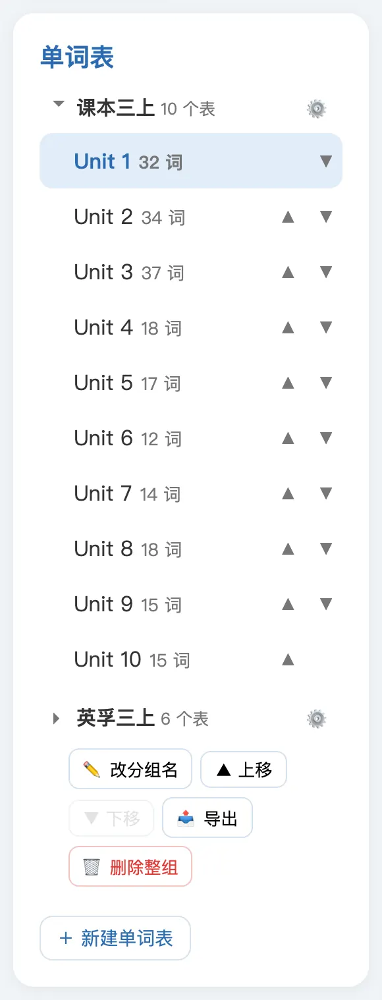
点“📂 选择文件导入”，可以一次选多个 .txt 文件。有 ## 名称 标题的文件按标题拆成多个单词表；没有标题的，用文件名作为单词表名称。导入前会先显示预览，可以改名字；同名的单词表会被覆盖。
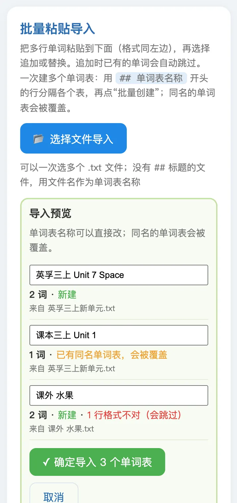
每行一个：英文 词性. 中文 | 例句 | 例句翻译，例如：
school n. 学校 | I go to school every day. | 我每天去上学。
play sports 运动（短语没有词性）
Children, this is *James. 孩子们，这是詹姆斯。（* 表示这个词不挖空）
# 这是注释
编辑单词表时，右边的“格式检查”会实时列出有问题的行。想让 AI 帮你编写单词表，可以把项目里的 单词表编写提示词.md 发给它。
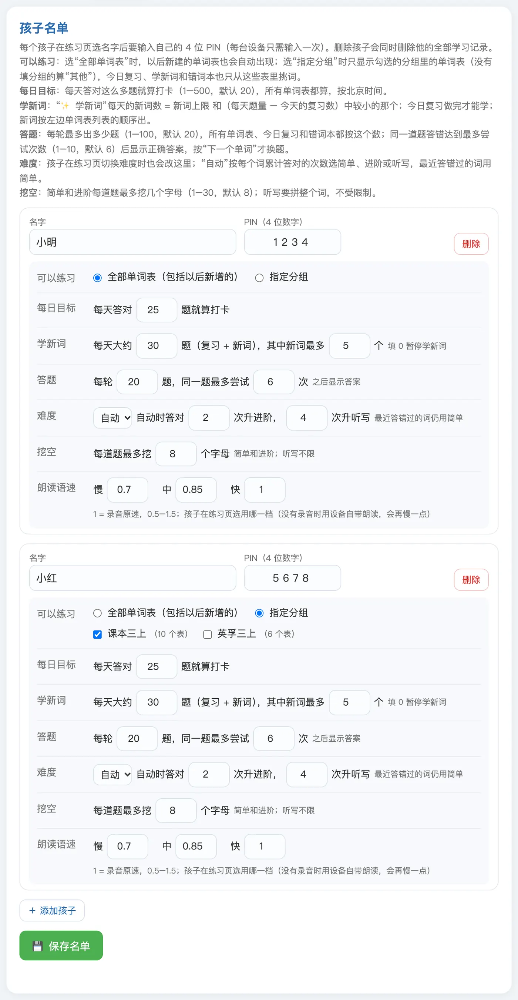
| 设置 | 说明 | 默认 |
|---|---|---|
| PIN | 4 位数字，孩子进入练习页时输入。连续输错 5 次锁定 10 分钟，改 PIN 并保存可以立即解锁 | 0000 |
| 每日目标 | 每天答对这么多题就打卡（所有单词表都算） | 20 |
| 最多尝试 | 同一道题答错这么多次后显示正确答案 | 6 |
| 每轮题数 | 一轮最多出多少题 | 20 |
| 可以练习 | 全部单词表，或者只勾选的分组（今日复习、学新词、错词本也只从这些分组挑词） | 全部 |
| 学新词 | 每天大约多少题（复习 + 新词），其中新词最多几个；填 0 暂停学新词 | 30 题 / 5 个 |
| 难度 | 自动、简单、进阶或听写（孩子在练习页切换时也会改这里）；“自动”时累计答对几次升进阶、几次升听写 | 自动；2 次 / 4 次 |
删除孩子会同时删除他的全部学习记录。
“📈 学习记录”标签：选孩子，可以看最近 7 天或 30 天的报表、错词排行和每一轮的记录。
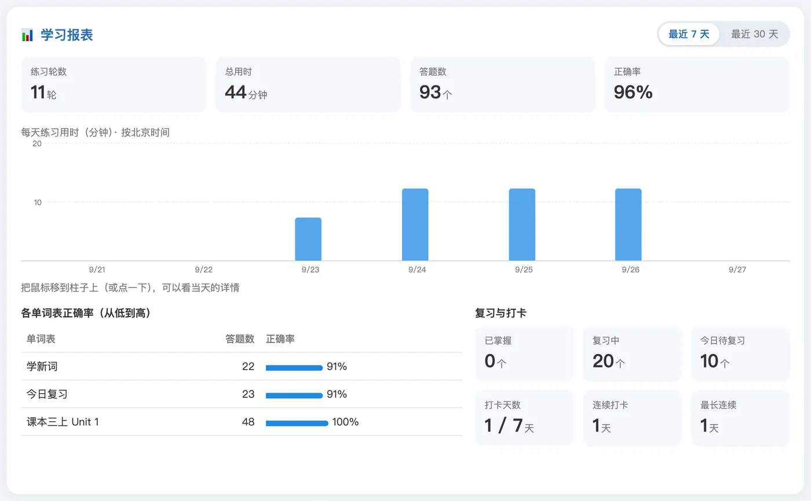
| 数字 | 含义 |
|---|---|
| 练习轮数 / 总用时 / 答题数 / 正确率 | 这段时间的合计 |
| 各单词表正确率 | 从低到高排，最薄弱的在最上面 |
| 已掌握 | 通过第 6 级复习的词 |
| 复习中 | 练过、还没掌握的词 |
| 今日待复习 | 复习中里，今天该复习的词 |
| 打卡天数 | 这段时间里达到每日目标的天数 |
| 连续打卡 / 最长连续 | 到今天（或昨天）为止的连续天数 / 历史最长 |
复习的三个数只统计分配给这个孩子的分组。
都在“⚙️ 设置”标签里：
| 问题 | 办法 |
|---|---|
| 忘记管理密码 | 在 CloudBase 控制台 → 文档型数据库 → 集合 spell_kv，删除 _id 为 auth_2ejson 的数据，密码恢复成打包时设置的原始密码 |
| 孩子忘了 PIN / 被锁定 | 管理页“👧 孩子”里改一个新 PIN 并保存，立即可用 |
| “学新词”一直是灰的 | 看卡片上的小字：先完成今日复习；今天的新词学完了；复习已够量；新词都学完了；或者新词上限是 0 |
| 页面提示“网络有点慢” | 点“🔄 重试”或刷新；一般是网络慢或服务刚启动 |
| 更新后页面还是旧的 | 关掉 Safari 里的标签页（或从主屏幕重新打开） |
| 报表和卡片上的数不一样 | 卡片会算上 iPad 上还没上传的记录；联网后会一致 |
| 换了一台 iPad | 打开练习页，选名字、输入 PIN 即可，数据都在服务器上 |
部署、更新和维护的步骤见项目里的 部署步骤.md。